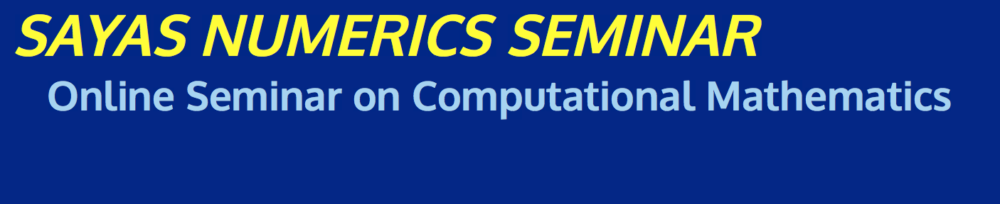
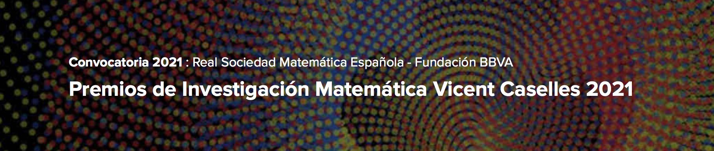
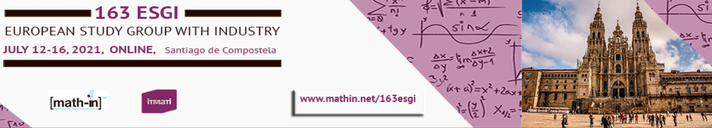
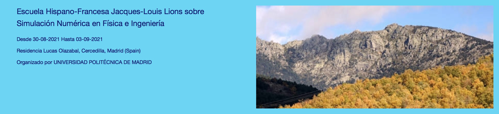
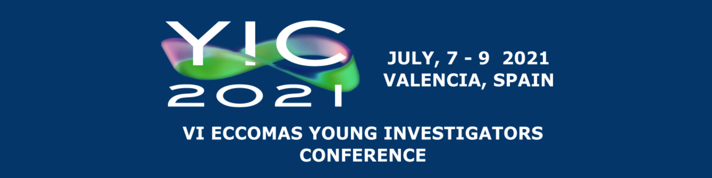
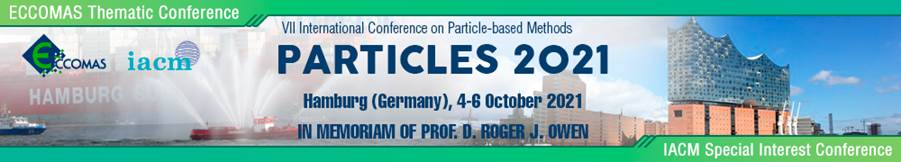
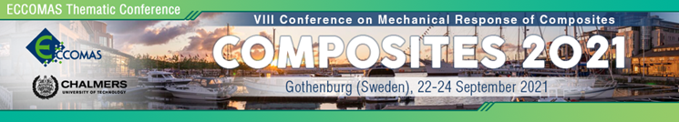
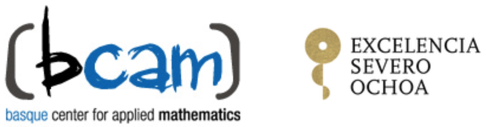
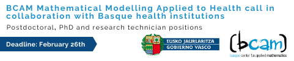
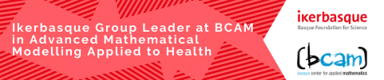

Anuncios

Following a major increase in funding, ICMS seeks a full-time Director. This new role will be an exciting opportunity to drive the expansion of the institute, as well as shape and develop its future direction. The successful applicant will concurrently hold the position of Director of the ICMS and a permanent Maxwell Institute (at the University of Edinburgh and Heriot-Watt) professorship in mathematical sciences.

We are pleased to announce 7 SAYAS NUMERICS SEMINAR in Spring 2021
This is a weekly online seminar on computational mathematics with talks on Tuesdays at 3:30pm Eastern Time, starting January 26.
The seminar is jointly organized by George Mason University; University of Maryland, Baltimore County; University of Delaware; University of Maryland, College Park.
Sayas Numerics Seminar started in Fall 2020, videos of past talks are available on the web site.
It was a successful event that serves the important purpose of allowing both senior and early career researchers to expose their work in the current difficult situation.

La Fundación BBVA y la Real Sociedad Matemática Española (RSME) colaboran en la convocatoria y adjudicación de la séptima edición de los Premios de Investigación Matemática Vicent Caselles. Los premios llevan el nombre de quien fue profesor de las universidades de Valencia, Islas Baleares y Pompeu Fabra, en recuerdo de su figura científica y humana.
En esta convocatoria se concederá un máximo de seis premios, cada uno con la dotación bruta de 2.000 euros, todos ellos en la modalidad de Investigación Matemática.
Los premios están dirigidos a investigadores en matemáticas de nacionalidad española, o de otra nacionalidad que hayan realizado su trabajo de investigación en una universidad o centro científico de España, que sean menores de 30 años a 31 de diciembre de 2020 y por tanto hayan nacido en los años 1991 o siguientes.
Sin excluir ninguna rama temática que se considere pertinente dentro del rango de la investigación matemática a la que se refieren los premios, se consideran incluidas las siguientes: combinatoria, optimización, estadística, teoría de la información, lógica, teoría de números, álgebra, geometría algebraica, topología, geometría, teoría de representaciones, análisis, sistemas dinámicos, ecuaciones en derivadas parciales, modelización y simulación, computación y aproximación, física matemática, matemáticas de la vida y de la Tierra, matemáticas económicas y sociales.
El plazo de presentación de candidaturas, a través del correo electrónico
premiosrsme@rsme.es
de la Secretaría de la Real Sociedad Matemática Española, finaliza a las 14:00 horas (hora peninsular) del lunes 1 de marzo de 2021.
Bases de la convocatoria e impreso de solicitud disponibles en la web de la Fundación BBVA.

El 163 ESGI -European Study Group with Industry-, organizado de forma conjunta entre el Instituto Tecnológico de Matemática Industrial (ITMATI) y la Red Española Matemática - Industria (math-in), tendrá lugar del 12 al 16 de julio de 2021 en formato online.
Los ESGI constituyen un foro para trabajar de manera conjunta científicos industriales e investigadores matemáticos sobre problemas de interés para la industria. El 163 ESGI, que reunirá a especialistas de las ramas de Matemática Aplicada y Estadística e Investigación Operativa, tiene como objetivo el fomento de la transferencia Matemática hacia la Industria buscando activamente proyectos de investigación y desarrollo en donde la Matemática tenga una especial relevancia. Debido a la pandemia de coronavirus (COVID-19), el evento será completamente online. Toda la información relativa al evento se actualizará continuamente en la página web del mismo: http://www.math-in.net/163esgi/.
La asistencia es gratuita en la Modalidad Básica, pero es necesario registrarse previamente. La fecha límite de inscripción será el 31 de mayo de 2021. http://www.math-in.net/163esgi/inscripcion-particulares.
El 163 ESGI cuenta con la cofinanciación del Ministerio de Ciencia Innovación y Universidades - Agencia Estatal de Investigación (AEI), a través de la acción de dinamización «Redes de Investigación» , convocatoria 2018, Red estratégica de Matemáticas (REM) (RED2018-102350-E) y la Red temática RTmath-in (RED2018-102514-T) y del proyecto ROMSOC (Reduced Order Modelling, Simulation and Optimization of coupled System), financiado dentro del Programa Marco de Investigación e Innovación Horizonte 2020 de la Unión Europea, en virtud del acuerdo de subvención Marie-Skłodowska-Curie no 765374.
El idioma oficial del evento será el inglés.
Esperamos que esta información os resulte de interés y os animamos a participar en el evento.
Carlos Manuel Castro Barbero
Universidad Politécnica de Madrid
http://eventos.upm.es/go/EHF_Madrid2021

Estimados colegas,
Ya está disponible la web de la próxima Escuela Hispano-Francesa con la información sobre los cursos y conferencias.
http://eventos.upm.es/go/EHF_Madrid2021
Os recordamos que se celebrará del 30 de agosto al 3 de septiembre de 2021 y que la inscripción se abrirá a mediados de abril.
Confiamos que la situación sanitaria mejore en las próximas semanas y nos permita celebrar un encuentro seguro.
Seguiremos informando sobre las novedades.
Comité Organizador:
| Carlos Castro, |
| Miguel Hermanns, |
| Fabricio Macià, |
| María Luisa Rapún y |
| Laura Saavedra. |

The 6th ECCOMAS Young Investigators Conference (YIC2021) will take place from July 7th through 9th, 2021 at Universitat Politècnica de València, Spain.
The conference organizers are three young Spanish researchers: Enrique Nadal and José Martinez from Valencia and Carmen Rodrigo from Zaragoza. They represent the two Spanish societies (SEMNI and SEMA) under the umbrella of ECCOMAS.
As in the previous conferences organized under the auspices of the European Community on Computational Methods in Applied Sciences (ECCOMAS), the focus is on the application of computational methods and modeling to different areas such as:
The target group of the YIC2021 are young researchers, however senior scientists are welcome. ECCOMAS PhD Olympiad will take place during the Conference.
See you in Valencia!
More information can be found at YIC2021 webpage: www.yic2021.upv.es

The VII International Conference on Particle-Based Methods (PARTICLES 2021) will be organised on 4-6 October 2021, in Hamburg, Germany.
PARTICLES 2021 will address both the fundamental basis and the applicability of state-of-the-art particle-based computational methods that can be effectively used for solving a variety of problems in engineering and applied sciences.
Plenary lectures presented by eminent scientists will be complemented by Invited Sessions organized by recognized experts in targeted research areas.
So far 21 Invited Sessions have been proposed. Details can be found in the conference web page.
We aim to hold PARTICLES 2021 in an excellent venue in the beautiful city of Hamburg as originally planned. However, may this not be possible due to the risks of COVID-19 transmission, we will hold the conference online.
Hence, authors and attendees are reassured that the conference will be held in either of the two formats. Furthermore, we are also exploring whether it would be possible to combine both formats and enable both in person and online participations; this will be confirmed in due course depending on the COVID-19 situation.
Authors are invited to submit individual contributions to one of the topics of the Conference. Deadline for submission of abstracts is March 22nd, 2021.
We look forward to welcoming you in PARTICLES 2021!!!
Best regards,
Peter Wriggers, Leibniz Univ. of Hannover, Germany.
Eugenio Oñate, CIMNE/Technical Univ. of Catalonia, Spain.
Alexander Düster, Hamburg University of Technology, Germany.
Tarek Zohdi, Univ. of California, Berkeley, USA.
Manfred Bischoff, Univ. of Stuttgart, Germany.

The planning for the 8th edition of the ECCOMAS Thematic Conference on the Mechanical Response of Composites (COMPOSITES 2021) to be held 22-24 September 2021 at Chalmers University of Technology in Gothenburg is progressing. With this announcement, we would like to share the latest news with you.
Although we are still hoping to arrange this conference in Gothenburg in September 2021, we are in parallel preparing for a back-up option to also be prepared to host an online version (at a reduced fee). We have set 15 April as a final deadline for announcing the final format of the conference. Irrespectively if this becomes a physical or an online meeting, we sincerely hope that you will join! And we promise to do our very best to arrange a conference which meets the high standards from previous editions.
We would like to remind you about the deadline for submission of abstracts: As announced before, authors are invited to submit individual contributions to one of the topics of the Conference. Important date: Deadline for submission of abstracts is 17 January, 2021.
Accommodation planning in relation to COVID-19: To make sure that hotel rooms are available to you if we reach our goal to host the conference at Chalmers, we have pre-booked hotel rooms that will be made available for reservation in mid-April. More information will come!
We sincerely hope to welcome you to Gothenburg, Sweden, in September 2021!
Martin Fagerström, Chalmers University of Technology, Sweden.
Giuseppe Catalanotti, Queen’s University Belfast, Northern Ireland.


This program is devoted to attracting talented Early-Stage Researchers-of any nationality-who wish to pursue doctoral studies in Spain or Portugal, and it’s sponsored by "la Caixa". These fellowships offer a highly competitive salary and complementary opportunities for training, incentives upon completion of the thesis, etc.
As a Severo Ochoa center of excellence, BCAM offers 6 PhD fellowships in Mathematics through this programme.

A series of projects in the field will be launched in 3 different areas of Applied Mathematics: 3 PhD, 3 Posdoctoral and 3 Research Technician positions:
Are you looking for a Research Technician position? Take a look at the currently open position at BCAM in Prediction and Clustering of Streaming Time Series with Applications to Electric Energy Management.

The Basque Centre for Applied Mathematics (BCAM), together with IKERBASQUE invites applications for one Group Leader position in Mathematical Modelling Applied to Health. This Group Leader call offers a permanent research position for a Group Leader willing to develop a long-term scientific career in the Basque Country. This call is open to both:
The evaluation committee will consider the strongest candidates with excellent leadership capabilities and an outstanding research record. The selected candidate is expected to perform independent research and coordinate the activities the center is performing in mathematical modelling applied to health in collaboration with Basque health institutions with the support of the Basque Government under a specific project. This is an ambitious project with research focused on applied mathematics, addressing fundamental questions in public health epidemiology (including surveillance), health system management and personalised medicine. The project covers research areas from Data Science and Artificial Intelligence to Mathematical Biology or Epidemiology and Biofluid Dynamics (of infectious diseases, including but not limited to COVID-19).
Candidates are required to be able to develop not only methodological research but also multidisciplinary applications in collaboration with research centers, health institutions, hospitals, etc. The candidate should be capable of promoting international collaborations, attracting competitive funding and establishing his/her own research groups.
It is a project for the dissemination of mathematics that will mainly take place during the third month of 2021. It has been designed by the DiMa network for the dissemination of mathematics and financed by the Spanish Foundation for Science and Technology (FECYT). Among the programmed activities there will be an exhibition, a school photography competition virtual escape rooms, origami and informative conferences, among others. All of them will focus on mathematics and its applications and, in particular, will focus on the theme "mathematics for a better world", chosen by the International Mathematical Union (IMU) for 14 March, International Mathematical Day.